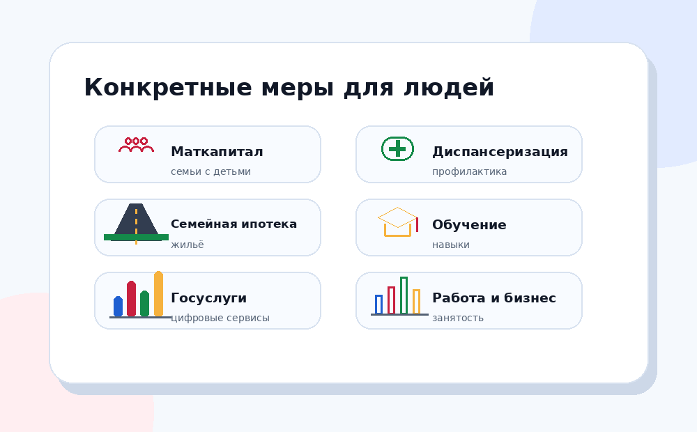

Национальные проекты становятся понятнее, когда смотреть не только на названия, а на конкретные меры: выплаты, услуги, объекты, обучение, сервисы и медицинскую помощь.

Одна из самых узнаваемых мер поддержки семей. По данным ВЦИОМ, её узнаваемость среди направлений нацпроектов достигает 98%.
семьяМера, связанная с профилактикой и ранним выявлением заболеваний. ВЦИОМ указывает её как одну из наиболее известных мер — 90%.
здоровьеМеханизм поддержки семей через улучшение жилищных условий. Важно смотреть условия программы на официальных ресурсах.
жильёДворы, парки, общественные пространства. Это один из наиболее видимых для граждан результатов проектной политики.
городская средаПрактический результат можно оценивать через состояние дорожной сети, сроки работ и региональные отчёты.
транспортСервисы помогают получать услуги быстрее и понятнее. Их стоит оценивать по доступности, удобству и охвату.
цифровизацияПолезность меры не сводится к красивому названию. Её нужно проверять по понятным признакам.
Семьям, школьникам, студентам, пожилым людям, предпринимателям, пациентам, жителям конкретной территории.
Через заявление, госуслугу, учреждение, программу, региональный сервис или участие в отборе.
На официальном сайте проекта, профильного министерства, Госуслуг, регионального органа власти или бюджетного портала.